PROFESSIONALISM
Professional in Every Action
Integrated Facility Services Provider
Selamat datang di PT. Sasana Bersaudara Indonesia (SBI), perusahaan Integrated Facility Service Provider yang berdiri sejak 2013. Kami hadir untuk membantu perusahaan, institusi, dan organisasi mengelola kebutuhan layanan pendukung secara profesional melalui integrasi sumber daya manusia, sistem kerja, dan pengelolaan layanan yang terstruktur.
Solusi layanan terpadu untuk perusahaan & institusi: cleaning, security, logistik, dan dukungan operasional — profesional sejak 2013.
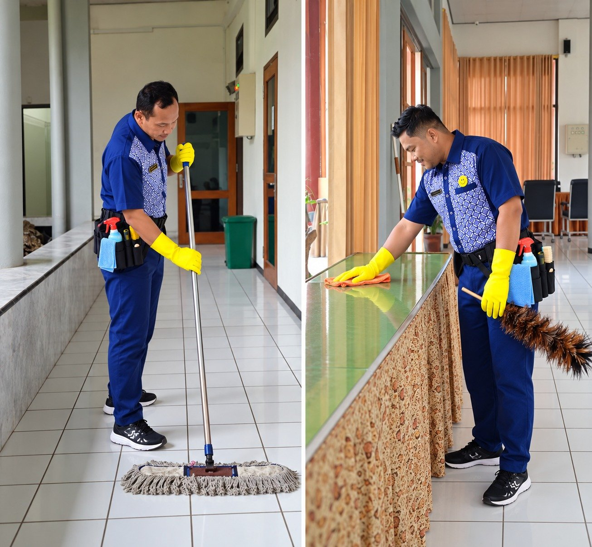
Klien & Mitra Kami
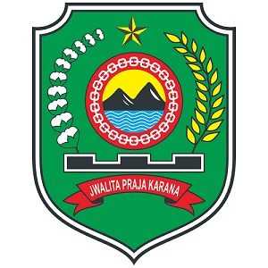
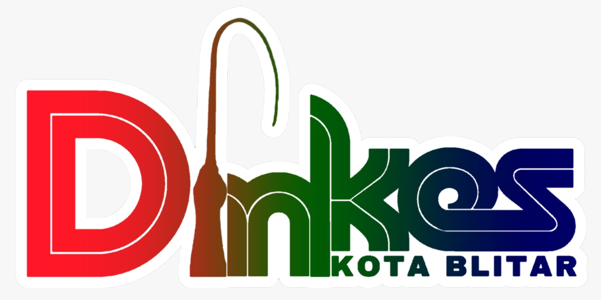
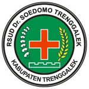
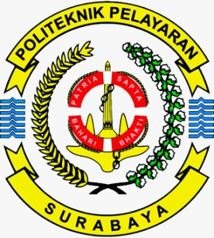
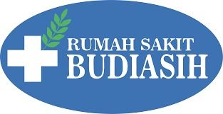
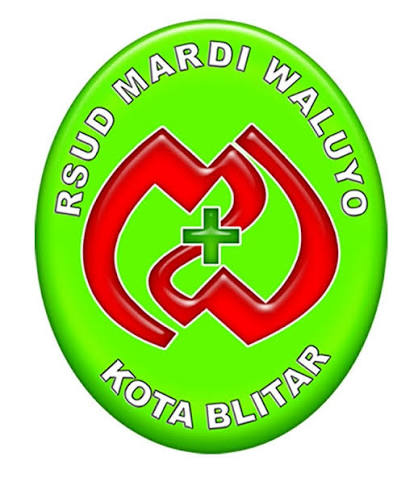
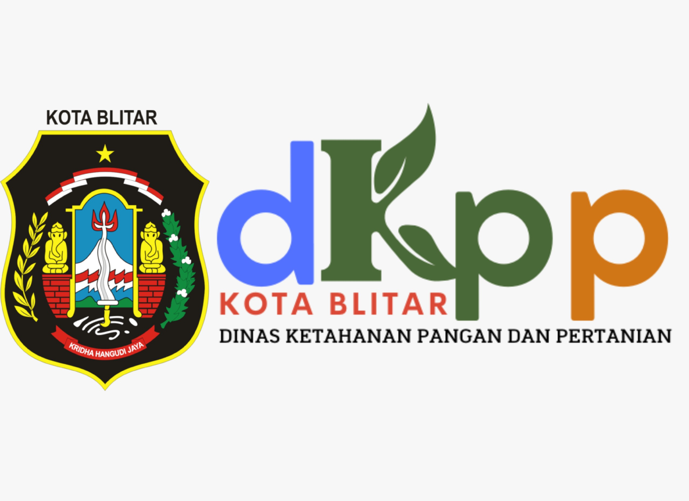
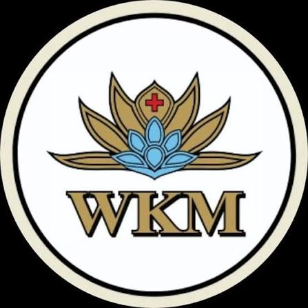
Kami menyediakan solusi layanan yang mencakup Cleaning Service, Security, Logistics Support, Technical Services, Administrative Support, dan General Support Service. Kami memahami bahwa setiap organisasi memiliki kebutuhan dan karakteristik operasional yang berbeda. Karena itu, kami menghadirkan layanan yang fleksibel, terukur, dan dapat disesuaikan dengan kebutuhan serta standar masing-masing klien.
Bagi kami, layanan terbaik bukan hanya tentang menyediakan tenaga kerja, tetapi tentang menciptakan nilai, kualitas, dan keandalan dalam setiap proses operasional. Dengan didukung SDM yang terlatih dan profesional, sistem manajemen terpadu, pengawasan yang konsisten, serta komitmen terhadap peningkatan kualitas, SBI berkomitmen menjadi mitra strategis yang membantu menciptakan lingkungan kerja yang bersih, aman, tertib, efisien, dan produktif.
Kami memahami kebutuhan klien, merancang solusi, menempatkan SDM yang sesuai, melakukan monitoring secara berkala, dan terus melakukan peningkatan untuk memastikan kualitas layanan tetap terjaga.
SBI — Integrated Service. Professional People. Reliable Solutions.
Setiap layanan dapat disesuaikan dengan karakteristik lokasi, standar operasional, jumlah personel, tingkat kebutuhan, serta target layanan yang ditetapkan bersama.
Pengelolaan SDM profesional dan terintegrasi: dari perencanaan tenaga kerja, rekrutmen, administrasi, payroll, hingga manajemen kinerja.
Layanan kebersihan profesional untuk perkantoran, rumah sakit, fasilitas pendidikan, hotel, manufaktur, hingga pusat perbelanjaan.
Perawatan taman dan landscaping oleh tim berpengalaman untuk area luar yang bersih, indah, dan menyegarkan.
Pengamanan profesional dengan personel terlatih: security guard, access control, patroli, hingga emergency response support.
Dukungan logistik dan pergudangan: warehouse support, loading & unloading, material handling, hingga distribution support.
Pemeliharaan gedung, elektrikal, mekanikal, preventive & corrective maintenance, dan inspeksi fasilitas berkala.
Staf administrasi, sekretaris, teknisi, supervisor, dan manajer untuk mendukung operasional bisnis secara efisien.
General worker, support produksi, office support, driver, kurir, porter, hingga tenaga pendukung khusus. Metode: harian lepas, borongan jam, borongan hasil.
Pembersihan rumah, apartemen, kost, dan villa: general cleaning, deep cleaning, hingga move in / move out cleaning.
Layanan ini dirancang untuk membantu perusahaan mengelola sumber daya manusia secara profesional, sistematis, dan terintegrasi — mulai dari pemenuhan kebutuhan tenaga kerja hingga pengelolaan kinerja dan pengembangan kompetensi, melalui perpaduan People, Process & Technology.
Beyond Manpower — We Manage People for Performance.
Layanan kebersihan profesional untuk menjaga kebersihan, kerapian, higienitas, dan kenyamanan lingkungan kerja maupun fasilitas publik — didukung SDM terlatih, peralatan dan mesin yang sesuai, chemical yang tepat dan aman, serta SOP yang terstruktur.
Jenis layanan: Commercial Cleaning Services • Hospital/Special Cleaning Services • Washroom Services • Dust Control Services.
Cocok untuk: rumah sakit, perkantoran, hotel, fasilitas pendidikan, manufaktur, pergudangan, retail, dan fasilitas komersial di berbagai kota di Jawa Timur dan Jawa Tengah.
Kami tidak hanya peduli pada kebersihan area dalam ruangan, tetapi juga luar ruangan. Layanan perawatan taman dan landscaping kami memastikan area luar terpelihara dengan baik, indah, dan menyegarkan.
Layanan pengamanan profesional dengan personel terlatih dan berorientasi pada keamanan, ketertiban, serta perlindungan aset dan aktivitas operasional klien.
Fokus utama: keamanan personel, aset, fasilitas, serta kelancaran aktivitas operasional.
Solusi tenaga pendukung logistik untuk memastikan proses penerimaan, penyimpanan, distribusi, dan pengelolaan barang berjalan tertib dan efisien.
Our Commitment: Safe Handling • Efficient Operations • Reliable Support
Layanan teknis untuk menjaga kondisi fasilitas, peralatan, dan infrastruktur pendukung agar tetap berfungsi dengan baik dan mendukung kelancaran operasional.
Dukungan administrasi dan teknis untuk kelancaran bisnis Anda — mulai dari administrasi, sekretaris, teknisi, hingga manajemen tim, oleh tim yang terlatih dan berpengalaman.
Layanan general support untuk kebutuhan tenaga pendukung yang spesifik maupun tambahan, melalui proses perekrutan tersistem serta training center dan trainer yang kompeten — menciptakan tenaga kerja yang siap pakai.
Metode pemborongan pekerjaan: Harian Lepas, Borongan Jam, dan Borongan Hasil.
Layanan home cleaning untuk menjaga kebersihan dan kenyamanan rumah secara praktis, menyeluruh, dan profesional — didukung tenaga terlatih dan metode kerja terstandar.
Cakupan area: Rumah • Apartemen • Kost • Villa • Townhouse • Residential Area
Clean Home. Healthy Living. Better Comfort.
Kami mengambil alih dan mengelola fungsi-fungsi pendukung operasional secara profesional, sehingga client dapat bekerja lebih efisien, produktif, responsif, dan fokus pada pertumbuhan bisnis.
Mengelola cleaning, manpower, warehouse, logistics, technical services, dan facility support agar sumber daya internal optimal untuk aktivitas strategis.
Tenaga kerja terlatih, SOP, KPI, supervisi, dan monitoring membuat aktivitas operasional lebih terstruktur dan produktif.
Kebutuhan manpower dan operational support dikelola terukur sehingga diperoleh cost efficiency tanpa mengabaikan kualitas.
Sistem kerja terstruktur membantu client merespons kebutuhan, perubahan, dan permasalahan di lapangan dengan lebih cepat.
Standar kerja, quality control, evaluasi, dan continuous improvement menjaga kualitas fasilitas dan layanan.
Sistem digital untuk attendance, employee database, monitoring, reporting, KPI, dan performance evaluation.
Kami mengelola recruitment, deployment, supervision, administration, hingga performance monitoring.
Layanan menyesuaikan jumlah tenaga kerja, scope pekerjaan, jam operasional, dan jenis layanan.
Mengubah efisiensi operasional menjadi business value: mengendalikan biaya, meningkatkan produktivitas, mengurangi operational waste, dan memusatkan sumber daya pada aktivitas yang menghasilkan pendapatan.
Pengelolaan manpower, equipment, consumables, dan proses kerja yang terstruktur mengendalikan biaya tanpa mengorbankan kualitas.
Tenaga kerja yang tepat, terlatih, diawasi, dan dievaluasi berdasarkan KPI menghasilkan produktivitas yang konsisten.
SOP, monitoring, checklist, dan quality control mengurangi kesalahan kerja, inefisiensi resources, downtime, dan pekerjaan berulang.
Tim internal client lebih fokus pada aktivitas utama yang menghasilkan revenue.
Technical services, preventive maintenance, dan facility support meminimalkan risiko gangguan operasional.
Kualitas yang konsisten meningkatkan customer experience, employee experience, dan reputasi perusahaan.
Informasi attendance, productivity, KPI, dan performance untuk pengambilan keputusan yang lebih tepat.
Kebutuhan manpower dan support services menyesuaikan skala operasional tanpa membangun struktur internal.
Peace of Mind Through Reliable Operations — kami mengambil tanggung jawab memastikan operasional berjalan terkendali, konsisten, aman, dan sesuai standar.
Setiap tenaga kerja melalui seleksi, pembekalan, pelatihan, dan penempatan sesuai kebutuhan pekerjaan.
Pekerjaan didukung SOP, Work Instruction, Checklist, KPI, dan Quality Control.
Monitoring, supervisi, evaluasi, dan corrective action menjaga standar layanan tetap terjaga.
Respon cepat dan solusi terarah saat terjadi kendala di lapangan.
Keselamatan kerja, keamanan fasilitas, kualitas layanan, dan kepatuhan prosedur diutamakan.
Laporan operasional membantu client mengetahui kondisi pekerjaan dan tindak lanjutnya.
Teknologi mendukung pengelolaan yang lebih transparan dan terukur.
Satu partner terintegrasi untuk berbagai kebutuhan operational support.
“Kami tidak hanya membantu mengurangi biaya. Kami membantu client mendapatkan lebih banyak value dari setiap sumber daya yang digunakan.”REDUCE COST. INCREASE PRODUCTIVITY. CREATE MORE VALUE.
Menjadi Integrated Facility Service Provider yang profesional, terpercaya, dan berdaya saing dalam menghadirkan solusi layanan terintegrasi yang berkualitas dan memberikan nilai nyata bagi klien.
“PRIMA adalah cara kami bekerja, melayani, dan membangun kepercayaan.”
Professional in Every Action
Reliable in Every Commitment
Honest in Every Relationship
Growing Together, Creating Value
Adapt, Improve, Excel
Menjunjung tinggi kejujuran, dedikasi, dan disiplin.
Mengutamakan kepuasan pelanggan dengan layanan ramah dan melebihi harapan.
Berpartisipasi aktif, menghargai peran, dan membangun hubungan saling percaya.
Berkomitmen memberikan yang terbaik dan menggunakan teknologi unggul.
Menjalin kerja sama yang saling menguntungkan dan mendukung.
Peduli terhadap lingkungan, masyarakat, dan dampak dari setiap tindakan.
PT. Sasana Bersaudara Indonesia didirikan pada tahun 2013 dengan visi membangun perusahaan jasa yang mampu memberikan layanan profesional, SDM berkualitas, dan solusi operasional yang dapat diandalkan — dengan mengutamakan profesionalisme, tanggung jawab, dan kepercayaan.
Seiring perjalanan, kebutuhan klien semakin berkembang dan kompleks. SBI memperkuat kemampuan dalam menyediakan berbagai layanan pendukung operasional, sekaligus membangun sistem pengelolaan yang lebih terstruktur dengan standar, pengawasan, dan tanggung jawab yang jelas.
Perkembangan tersebut membawa SBI menuju positioning sebagai Integrated Facility Service Provider, mengintegrasikan Cleaning Service, Security, Logistics Support, Technical Services, Administrative Support, dan General Support Service.
SBI terus berinvestasi pada pengembangan SDM, sistem manajemen, teknologi, standar operasional, dan inovasi layanan — karena pertumbuhan bukan hanya tentang menjadi lebih besar, tetapi menjadi lebih baik dan lebih terpercaya.
Berikut beberapa institusi dan perusahaan yang telah mempercayakan kebutuhan facility services-nya kepada SBI.
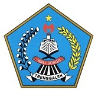
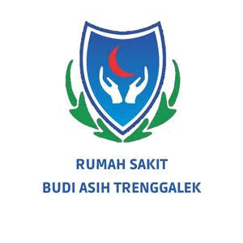
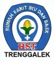
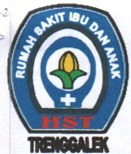
Jasa Outsourcing Kebersihan Gedung Graha dan Taman Rumah Sakit
Jasa Outsourcing Transporter Rumah Sakit
Jasa Outsourcing Kebersihan Gedung Graha dan Taman Rumah Sakit
Jasa Outsourcing Transporter Rumah Sakit
Jasa Outsourcing Kebersihan Zona III
Jasa Outsourcing Transporter Rumah Sakit
Belanja Jasa Cleaning Service
Jasa Penyediaan Tenaga Kebersihan dan Satpam
Jasa Cleaning Service dan Transporter Rumah Sakit
Jasa Kebersihan Rumah Sakit Ibu dan Anak “Harapan Sehat dan Tentram”
Jasa Outsourcing Kebersihan Zona I
Jasa Outsourcing Transporter Rumah Sakit
Belanja Jasa Cleaning Service
Jasa Penyediaan Tenaga Kebersihan dan Satpam
Jasa Cleaning Service dan Transporter Rumah Sakit
Jasa Outsourcing Kebersihan Zona I (Graha dan Paviliun Yudhistira)
Jasa Outsourcing Transporter Rumah Sakit
Belanja Jasa Cleaning Service
Penyediaan Jasa Tenaga Kebersihan
Jasa Penyediaan Tenaga Kebersihan dan Satpam
Jasa Cleaning Service dan Transporter Rumah Sakit
Jasa Outsourcing Kebersihan Zona I (Graha dan Paviliun Yudhistira)
Jasa Outsourcing Transporter Rumah Sakit
Belanja Jasa Cleaning Service
Penyediaan Jasa Tenaga Kebersihan Dinkes Kota Blitar
Pemeliharaan Gedung dan Taman (Jasa Kebersihan Gedung dan Jasa Kebersihan Halaman/Taman)
Penyediaan Jasa Tenaga Kebersihan
Penyediaan Jasa Tenaga Kebersihan Dinkes Kota Blitar
Belanja Jasa Cleaning Service
Penyediaan Jasa Tenaga Kebersihan Dinkes Kota Blitar
Belanja Jasa Cleaning Service
Penyediaan Jasa Tenaga Kebersihan Dinkes Kota Blitar
Belanja Jasa Cleaning Service
Belanja Jasa Cleaning Service
Penyediaan Jasa Tenaga Kebersihan Kantor
Penyediaan Jasa Tenaga Kebersihan Gedung dan Taman
Tim SBI bertugas di berbagai lokasi klien — klik foto untuk memperbesar.
Bergabunglah dengan SBI untuk layanan yang tidak hanya memenuhi kebutuhan bisnis Anda, tetapi juga membawa dampak positif bagi masyarakat dan lingkungan.